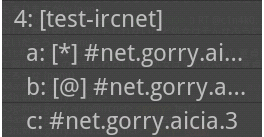

「チャンネル」は、IRCによる会話を行う場所の最小単位です。会話を行うには、１サーバにつき１チャンネル以上に入る（joinする）必要があります。
チャンネルに入る

入るチャンネル
チャンネルに入るには、[U]ボタンをタップして「IRCメニュー」を表示し、[チャンネルに入る]を選びます。
チャンネル名を入力すると、そのチャンネルに入ることができます。チャンネルが存在しない場合は、新しいチャンネルが作られます。
チャンネルの代わりに、ユーザー名を指定することもできます。この場合は、指定したユーザーと２人だけで会話を行う「トーク」となります。
|
パスワード付きのチャンネルに入りたいときは、チャンネル名の後に",パスワード"を追加します。
|
チャンネルの選択

チャンネルの一覧
すでに入っているチャンネルから発言先を選択するには、[Ch]ボタンをタップします。
チャンネルの一覧が表示されます。チャンネル名をタップすると、そのチャンネルへ移動します。
ダイアログ下部（横向き表示のときは右側）のボタンは、指定したサーバ内の最初のチャンネルへリストを移動させるショートカットボタンです。右の図の場合では、４番目のサーバの一覧が表示されていますが、ここで[1]ボタンを押すと、１番目のサーバのチャンネル一覧へリストが移動します。
- マーク付のチャンネル名
-

マーク付チャンネルチャンネル名の先頭に、[@]/[*]のマークが付くことがあります。[@] 通知チャンネル 「通知キーワードが含まれた発言があった」ことを示します。 [*] 更新チャンネル 「新しい発言があった」ことを示します。 [Ch]ボタンを長押し（ロングタップ）すると、どちらかのマークがあるチャンネルのみの一覧が表示されます。どちらの一覧を表示するかは、環境設定の[[Ch]長押しを通知チャンネル一覧にする]で設定することができます。チャンネルから出る
現在入っているチャンネルから退出するには、退出したいチャンネルで[U]ボタンをタップして「IRCメニュー」を表示し、[チャンネルから出る]を選びます。
チャンネルダイアログ
[U]ボタンをタップすると、現在メインログウィンドウで表示しているチャンネルに対して、操作を行うためのダイアログが表示されます。上の[チャンネルから出る]は、この操作のうちのひとつです。
メインログウィンドウを長押し（ロングタップ）しても、このダイアログが表示されます。ただし、この操作で表示されるメニューは多少異なります。
チャンネルダイアログは、そのチャンネルがTIGモードで動作しているかどうかで内容が変化します。
チャンネル設定の編集
チャンネル設定の編集[U]ボタンをタップして「IRCメニュー」を表示し、[チャンネル設定]を選ぶと、現在メインログウィンドウで表示しているチャンネルの動作設定を行うことができます。
チャンネル名 設定を行うチャンネル名を表示しています。変更はできません。サブログに出力する 現在のチャンネルがメインログウィンドウに表示されていないとき、代わりにサブログウィンドウに出力します。このスイッチがOFFのときは、現在のチャンネルの内容はサブログウィンドウに出力されません。常にサブログに出力する 現在のチャンネルがメインログウィンドウに表示されていても、サブログウィンドウに出力します。[サブログに出力する]がONであることが前提です。このスイッチがOFFのときは、現在のチャンネルがメインログウィンドウに表示されていないときのみサブログに出力することを許可します。通知キーワードで通知する 設定された通知キーワードがチャンネルへの発言内から見つかった場合、通知を行います。このスイッチがOFFのときは、通知を行いません。すべての発言を通知する 通知キーワードがチャンネルへの発言内から見つからなくても、常に通知を行います。「発言が少ないが反応は迅速に行いたい」チャンネルに対してONにしておくと便利です。このスイッチがOFFのときは、通知キーワードがチャンネルへの発言内から見つかった場合のみ通知を許可します。このスイッチは、上の[通知キーワードで通知する]がONであることが前提です。システムメッセージを
サブログにも出力各チャンネルでIRCシステムにより表示されるメッセージ（薄い色で表示される）を、メインログウィンドウだけでなくサブログウィンドウにも出力します。このスイッチは、「サーバの設定」で[システムメッセージをサブログにも出力]がONであり、また上の[通知キーワードで通知する]がONであることが前提です。通知行をOSの
通知システムで表示通知が行われるとき、OSの通知システムにその行を表示します。通知をタップすることで、AiCiAで通知チャンネルを開くことができます。
通知の例